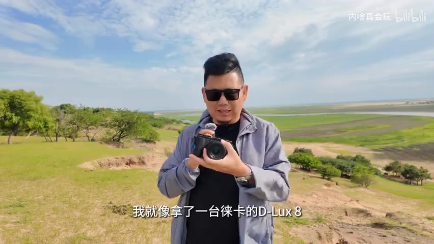
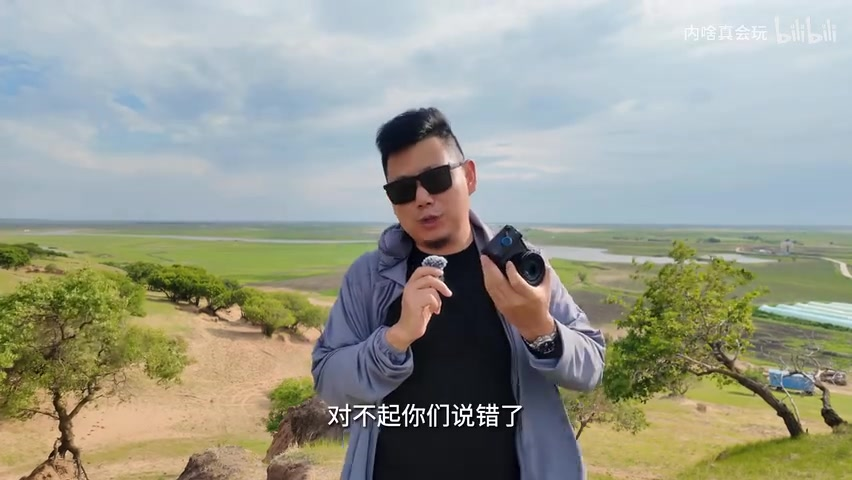
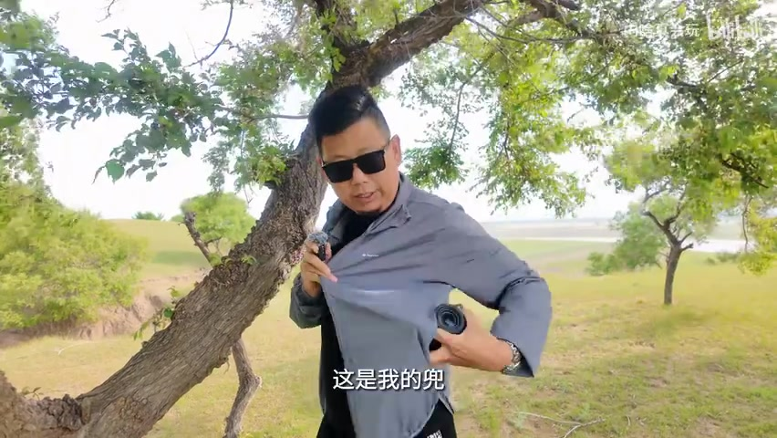
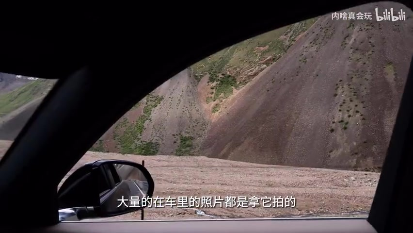
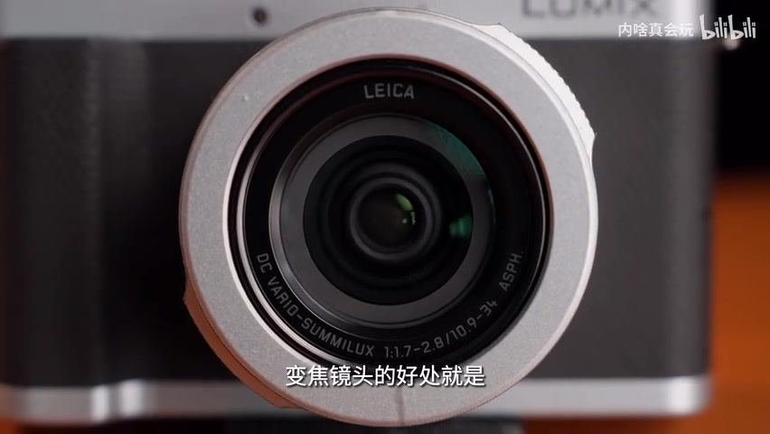
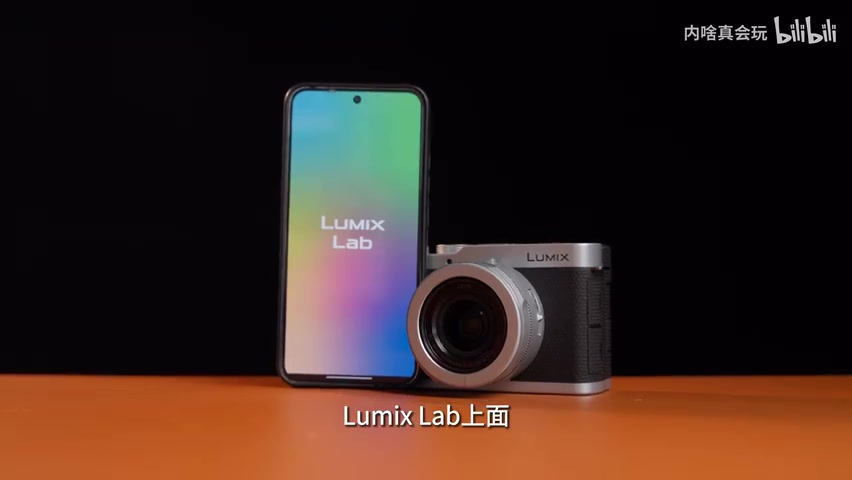
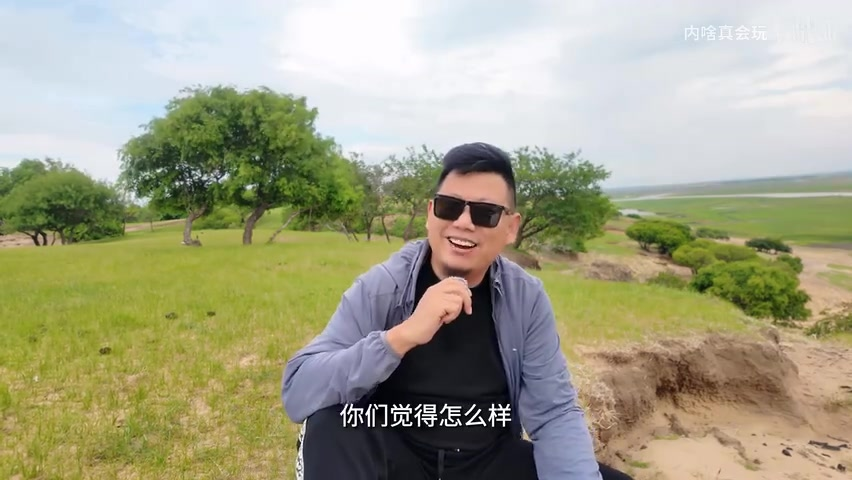
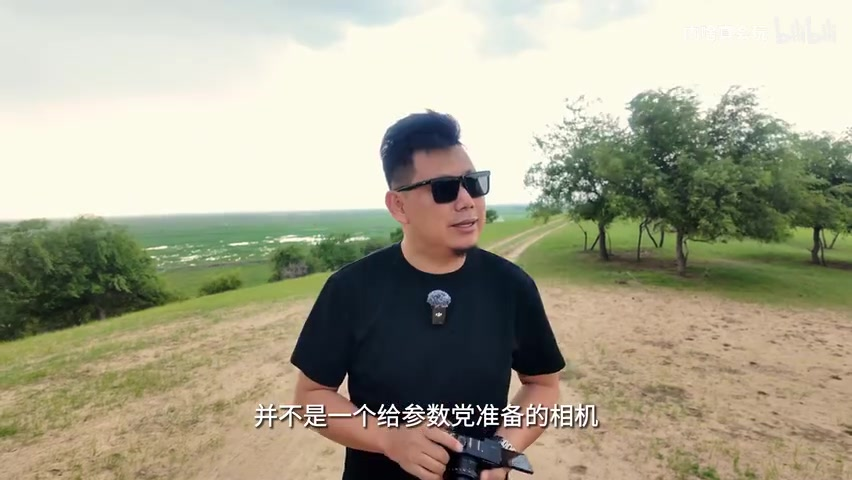

01
中文
我感觉我带的都不是松下，我就像拿了一台徕卡的D-Lux 8。
EN
I feel like I'm not even carrying a Panasonic — it's like holding a Leica D-Lux 8.
表达提示hold a Leica（拿着徕卡）；feel like（感觉像）

Scene English · 相机评测 · 松下L10
Panasonic L10: Hasselblad's Best Backup, or an Expensive Toy? | Jidao #340
🎧 语音讲解
Opening: It Feels Like a Leica D-Lux 8
情境UP主用松下L10两周，感觉拿的不是松下，简直像拿了一台徕卡D-Lux 8。这次把L10带去新疆拍风光，愿称它为哈苏的最佳备机。语域：评测口播，先抛结论。
我感觉我带的都不是松下，我就像拿了一台徕卡的D-Lux 8。
I feel like I'm not even carrying a Panasonic — it's like holding a Leica D-Lux 8.
表达提示hold a Leica（拿着徕卡）；feel like（感觉像）
不能说像吧，简直是一模一样。
Actually, not just similar — it's virtually identical.
表达提示virtually identical（简直一模一样）
我愿称它为哈苏的最佳备机。
I'd call it the perfect backup camera for a Hasselblad.
表达提示the perfect backup camera（最佳备机）
简直一模一样 → virtually identical / exactly the same
最佳备机 → the perfect backup camera / a great second body

Flaw One: The Stabilization Got Cut
情境先说缺点。很多人吐槽它没有任何防抖，但UP主纠正：机身没有防抖，镜头支持OIS防抖。日常扫街够用，但相比SE2的防抖标准确实做不到，这是松下对L10砍得最狠的一刀。语域：评测口播，辩证分析。
很多人说它没有任何防抖，对不起你们说错了。
Many people say it has no stabilization at all — sorry, but you've got that wrong.
表达提示no stabilization at all（没有任何防抖）；you've got that wrong（你们说错了）
机身是没有防抖的，而镜头是支持OIS防抖。
The body has no IBIS, but the lens does support OIS stabilization.
表达提示IBIS（机身防抖）；OIS（镜头光学防抖）
这是松下对L10这台机器砍得最狠的一刀。
This is the deepest cut Panasonic made on the L10.
表达提示the deepest cut（砍得最狠的一刀）
你们说错了 → you've got that wrong / that's not quite right
砍得最狠的一刀 → the deepest cut / the biggest sacrifice

Flaw Two: Not Light or Small Enough
情境第二个缺点是不够轻不够小。有人拿它跟理光GR3比，UP主现场演示「揣兜」，只能证明兜够大。但同事说得对：M43机身加14mm定焦肯定更轻，但L10是变焦镜头——24到75mm焦段，车里拍照速度比哈苏快很多。语域：评测口播，现场演示+幽默。
很多人说它没有办法揣兜里，只能证明你的兜不够大。
People say it can't fit in a pocket — that just proves your pockets aren't big enough.
表达提示fit in a pocket（揣兜里）；prove（证明）
它是一只变焦镜头，大概是24毫米到75毫米。
It's a zoom lens, roughly 24 to 75 millimeters.
表达提示a zoom lens（变焦镜头）；roughly（大概）
我在车里拍摄的时候，大量的照片都是拿它拍的，因为哈苏太慢了。
When shooting from the car, most of my photos came from this camera, because the Hasselblad is just too slow.
表达提示shooting from the car（车里拍摄）；too slow（太慢）
揣兜里 → fit in a pocket / slip it in your pocket
车里拍摄 → shooting from the car / shoot from the driver's seat

Core Value: It Solves a Shooting Scenario
情境两周用下来，UP主最终评价是特别值得买。它解决的不是参数问题——如果参数能解决摄影问题，S1R2、哈苏、尼康Z7都会卖得特别好。它解决的是拍摄场景问题：重装相机和手机之间的选择。语域：评测口播，观点输出。
用完两周之后，我对这个相机的最终评价就是一句话：特别值得买。
After two weeks, my final verdict on this camera is one sentence: it's well worth buying.
表达提示final verdict（最终评价）；well worth buying（特别值得买）
如果参数能解决摄影的问题的话，S1R2将会卖得特别好。
If specs alone could solve photography problems, the S1R2 would be selling incredibly well.
表达提示specs alone（仅靠参数）；selling incredibly well（卖得特别好）
它不是解决参数的问题，它是给你解决了一个拍摄场景的问题。
It doesn't solve a specs problem — it solves a shooting-scenario problem.
表达提示a shooting-scenario problem（拍摄场景问题）
最终评价 → final verdict / my takeaway
解决场景问题 → solve a shooting-scenario problem / fill a real-world gap

The Choice Between Heavy Gear and a Phone
情境UP主自诩重装器材党：高像素相机加两三支镜头，自驾时相机大多躺后备箱，只有世界级风光才拿出来。但窗外沿途的风光才是最美的，L10就是重装相机和手机之间的绝佳选择。语域：评测口播，生活化叙述。
我经常自许为一个重装器材的，每次出门都要带一个高像素的相机，加两到三支镜头。
I often call myself a heavy-gear shooter — I take a high-res camera plus two or three lenses on every trip.
表达提示a heavy-gear shooter（重装器材党）；high-res camera（高像素相机）
只有到了世界级风光的场景，我才会把相机拿出来。
Only when I reach world-class scenery do I take the camera out.
表达提示world-class scenery（世界级风光）；take out（拿出来）
在重装相机和手机之间，L10是一个特别好的选择。
Between the heavy gear and your phone, the L10 is a really great middle ground.
表达提示a middle ground（中间选择）
重装器材党 → a heavy-gear shooter / someone who packs pro gear
中间选择 → a middle ground / a happy medium

The Zoom Lens: Both Attack and Retreat
情境一台卡片机能做变焦镜头很迷：理光GR3是28mm定焦，对很多人是难点，而L10做的是变焦——拍大景时进可攻退可守，要广角给广角，要长焦镜头能伸出来。这是用着特别舒服的重要点。语域：评测口播，功能讲解。
做一台卡片机能做一个变焦镜头，这个事多多少少有点迷。
A compact camera packing a zoom lens — that's a little unusual.
表达提示packing a zoom lens（装着变焦镜头）；a little unusual（有点迷）
变焦镜头的好处就是在拍这种大景的时候，进可攻退可守。
The beauty of a zoom is that when you're shooting big scenes, you can go wide or pull back.
表达提示go wide or pull back（进可攻退可守）
要广角它能给你提供一定的广角，要长焦它也能把镜头伸出来。
Want wide angle? It gives you wide. Want telephoto? It extends the lens out.
表达提示extend the lens（把镜头伸出来）
进可攻退可守 → go wide or pull back / flexible in every direction
把镜头伸出来 → extend the lens / zoom the lens out

Lumix Lab & LUTs: Little Post-Processing
情境除了小以外，愿意带出去的另一个原因是 Lumix Lab 和 LUT：想要的 LUT 基本都有，新疆拍摄时有个「喜马拉雅」LUT 特别适合拍大风光。用了 LUT，后期工作减少不是一点点，基本不做后期。语域：评测口播，推荐语气。
我想要的LUT基本都有，有一个LUT用得特别多，拼出来是喜马拉雅的一个LUT。
Basically every LUT I want is there — one I used constantly was a Himalayan-style LUT.
表达提示every LUT I want（想要的LUT基本都有）；use constantly（用得特别多）
用了这些LUT，真的后期工作减少不是一点点。
With these LUTs, the post-processing workload really drops — and not by a little.
表达提示the post-processing workload（后期工作）；drops a lot（减少不是一点点）
基本上这台相机拍的照片，我是不怎么做后期的。
Basically, for photos from this camera, I barely do any post-processing.
表达提示barely do any post（基本不做后期）
直出少后期 → minimal post-processing / little editing needed
后期工作减少 → less work in post / saves hours in editing

Ending: Not a GAS Machine, a Recovery Machine
情境L10 不是让你发烧的相机，而是让你退烧的相机。玩摄影玩到最后发现需要的不是最强画质、最大光圈，而是每天愿意带在身上的相机。它不是给参数党准备的。语域：评测口播，哲思收尾。
L10这台相机并不是一台让你发烧的相机，而是一台让你退烧的相机。
The L10 isn't a camera that feeds your gear obsession — it's a camera that cures it.
表达提示feed your gear obsession（让你发烧）；cure it（退烧）
其实我需要的是每天愿意把它带在身上的相机。
What I actually need is a camera I'm willing to carry every single day.
表达提示be willing to carry（愿意带在身）
如果你是新手，追求画质非常稳、像素非常高，那么我可能会给你推荐松下S5R。
If you're a beginner chasing rock-steady image quality and super-high resolution, I'd recommend the Panasonic S5R instead.
表达提示rock-steady image quality（非常稳的画质）；recommend instead（改推荐）
让你发烧 → feed your gear obsession / make you want more gear
让你退烧 → cure the obsession / bring you back to basics
说一台相机不是参数机
推荐一台随身相机
说相机让你退烧
夸相机的变焦方便
防抖在相机语境用 IBIS（机身防抖）/ OIS（光学防抖）比 anti-shake 更专业。
fit in（放得进）才是「装进口袋」的正确表达；put in 是「放进去」的动作。
specs（参数）作主语用复数，be 动词用 are；the main issue 比 problem 更自然。
发烧/退烧是中文比喻，英文用 gear obsession（器材欲）或 GAS（器材购买综合症）表达。